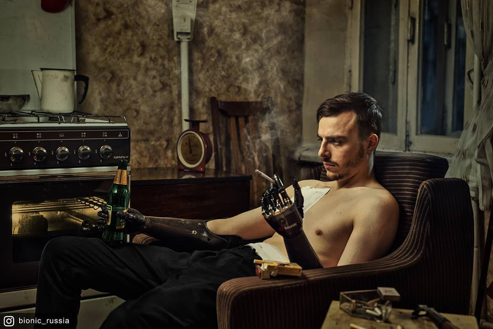
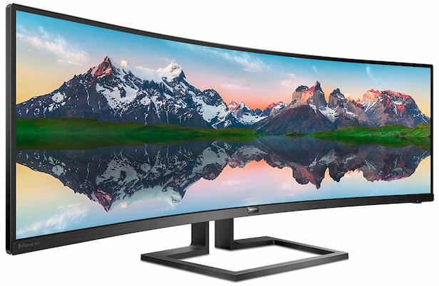
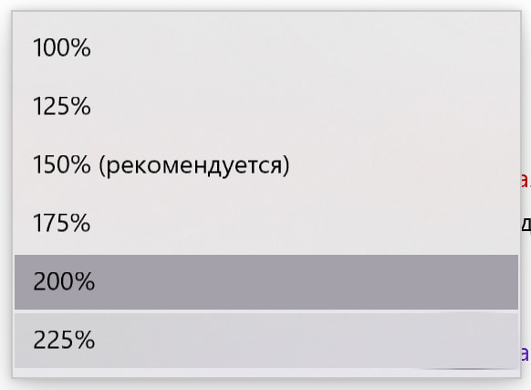
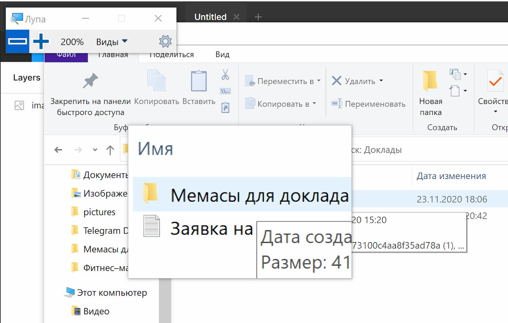
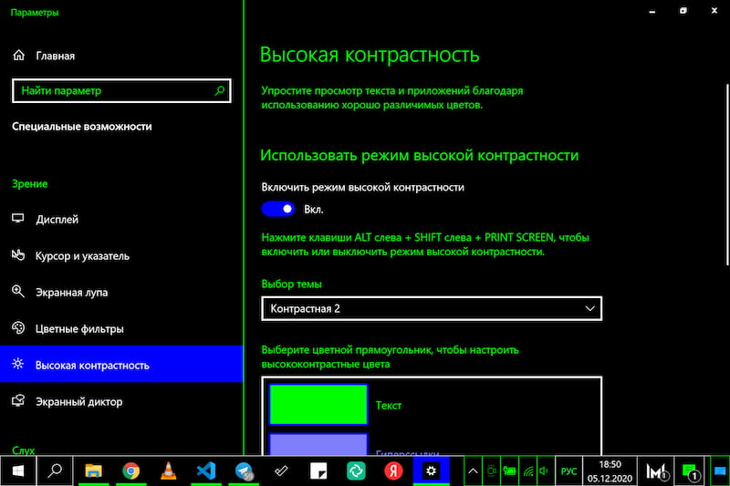
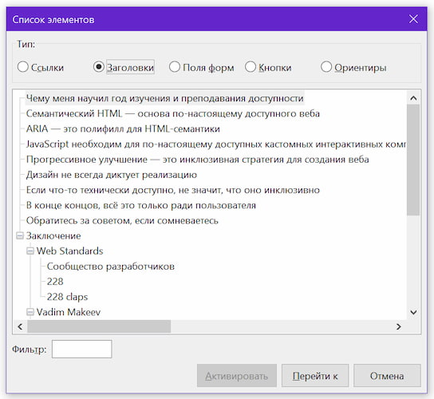
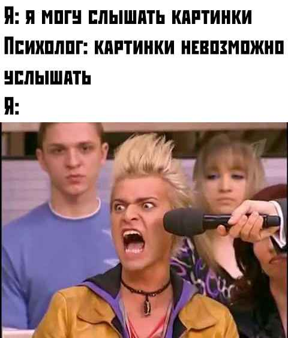
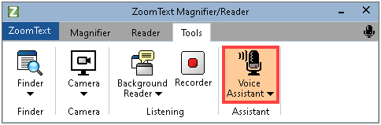
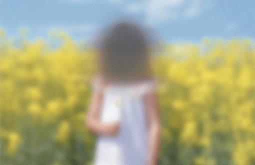

Об установлении Порядка обеспечения условий доступности для инвалидов по зрению официальных сайтов федеральных органов государственной власти, органов государственной власти субъектов Российской Федерации и органов местного самоуправления в сети «Интернет»
Для нескольких категорий людей с нарушениями зрения
Требуется по закону
Почему только для слабовидящих?

ГОСТ Р 52872-2012🠛ГОСТ Р 52872-2019
ГОСТ Р 52872-2019
Интернет-ресурсы и другая информация, представленная в электронно-цифровой форме. Приложения для стационарных и мобильных устройств, иные пользовательские интерфейсы. Требования доступности для людей с инвалидностью и других лиц с ограничениями жизнедеятельности
Органы государственной власти в технических заданиях на проектирование и разработку интерфейсов своих официальных сайтов предусматривают наличие альтернативных текстовых версий таких сайтов (далее – версия для инвалидов по зрению), переход к которым осуществляется с главной страницы официального сайта в случае, если сам официальный сайт исходно не соответствует требованиям пункта 4 настоящего Порядка
Требования формальным языком
нетекстовая информация и нетекстовые материалы, представленные на официальных сайтах органов государственной власти, должны присутствовать также и в версии для инвалидов по зрению в виде краткого описания такой нетекстовой информации, за исключением нетекстовой информации и нетекстовых материалов, используемых только с целью украшения и визуального оформления официальных сайтов органов государственной власти;
графические файлы формата PDF, содержащие документы в графическом виде, представленные в разделах официальных сайтов органов государственной власти, должны присутствовать также и в версиях для инвалидов по зрению в текстовом формате;
наличие возможности изменения размеров текстовой информации до 200%, шрифта, интервала между буквами (кернинг), а также цветовой схемы;
информация, относящаяся к работам (услугам) для инвалидов по зрению, должна быть представлена на уровне доступности специализированных интернет-ресурсов для инвалидов по зрению.
Перевод на человеческий язык
Подписанные контентные изображения
Доступные PDF-вложения или их текстовые версии
Увеличение размера шрифта до 200%
Изменение расстояния между буквами
Изменение цветовой схемы
Отдельная версия не понадобится!
Подписанные контентные изображения 🠦 Осмысленное заполнение атрибута alt
Увеличение размера шрифта до 200% 🠦 Проработанный адаптив
Изменение расстояния между буквами 🠦 Читабельный шрифт
Изменение цветовой схемы 🠦 Доступные, контрастные цвета + темизация
И зачем тогда отдельная версия?
На что обратить внимание
Какими инструментами пользуются слабовидящие?
Каким образом они просматривают сайты?
Нужна ли слабовидящим отдельная версия?
Какие инструменты нужны слабовидящему
Скрин-зум
Большой монитор
Экранная лупа
Тёмная тема / Высококонтрастный режим
Скринридер / Голосовой синтезатор
Скрин-зум и большие мониторы


Экранная лупа

Тёмная тема / режим высокой контрастности

Cкринридеры


Скрин-зум + голосовые синтезаторы

Как слабовидящие просматривают сайты?
Нейропатия Лебера
Обычное зрение

Зрение человека с нейропатией Лебера